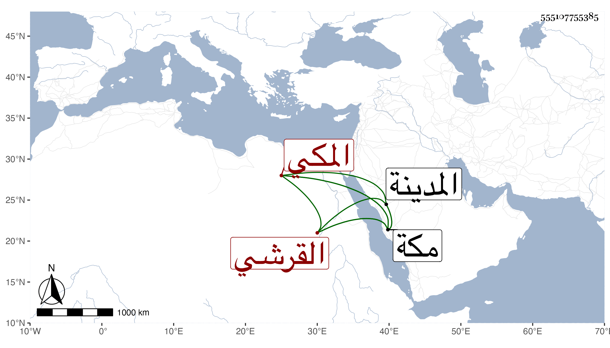

0902Sakhawi.DawLamic.ITO20230111-ara1.EIS1600.555107755385
Biography ID: 555107755385
207
أحمد بن محمد بن إبراهيم بن علي بن أبي البركات البهاء أبو المحاسن بن الجمال أبي السعود بن البرهان القرشي المكي شقيق الصلاح محمد الآتي وهذا أصغرهما ويعرف كسلفه بابن ظهيرة . ولد في يوم الخميس ثامن عشر ربيع الأول سنة اثنتين وثمانين بمكة ونشأ بها في كنف أبيه فحفظ القرآن والمنهاج وسمع مني حضورا بمكة في المجاورة الثالثة وهو في الرابعة المسلسل وغيره وكذا على أم حبيبة زينب ابنة الشوبكي من أول ابن ماجه إلى باب التوقي ومن الشفاعة إلى آخره مع ما فيه من الثلاثيات وثلاثيات البخاري وجزء أبي سهل بن زياد القطان وأبي يعلى الخليل وأسلاف النبي صلى الله عليه وسلم للمسيتي وحديث الأول للديرعاقولي ، ثم سمع علي بقراءة أخيه الشفا وغيره ، ودار مع والده قبل ذلك المدينة النبوية وسمع بها على الشيخ محمد بن أبي الفرج المراغي ، ولازم والده في سماعه الحديث وغيره ، وهو حاذق فطن بورك فيه .
